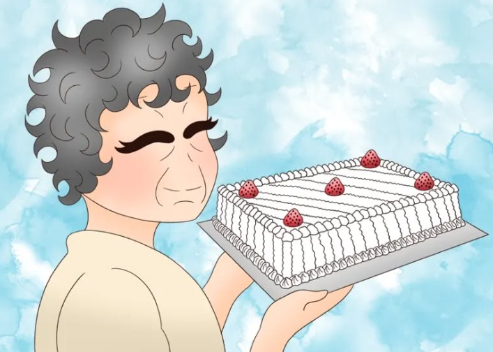

O Início de Tudo
Havia um brilho especial em Dona Yolanda, uma mulher que parecia nunca parar e que encontrava sua maior alegria em agradar aos outros.
Sua vida foi uma doação constante: para as famílias que amparou como dama de caridade, para as crianças cujo sorriso ela cultivava e para todos que provaram o afeto que ela servia em forma de bolos, doces e salgados.
